Sprachen mit echten Belegen
World View und Matrix aus frisch geklonten Open-Source-Projekten. Jede Aufnahme nennt ihren Quellstand und ihre Grenzen.
Fehlende Evidenz ist keine Null. Ein Sprachbeispiel belegt keinen vollständigen Compiler- oder Laufzeitsupport. Graue Flächen bleiben unbekannt; die Matrix zeigt statische Abhängigkeiten.
Die Desktop-Übersicht kann weitere erkannte Projektbereiche einbeziehen; angeforderte Quellfilter stehen in der Provenienz. Paketzyklen in der World View und Dateizyklen in der Matrix haben unterschiedliche Aggregation. Vergleiche nur denselben Umfang und dieselbe Ebene.
Apache Kafka
Java-Repository-Übersicht mit einer Client-Quellkonfiguration; externe Referenzen bleiben teilweise offen.
Quellstand dc9f1f42828f · Apache-2.0 · 2026-11-20


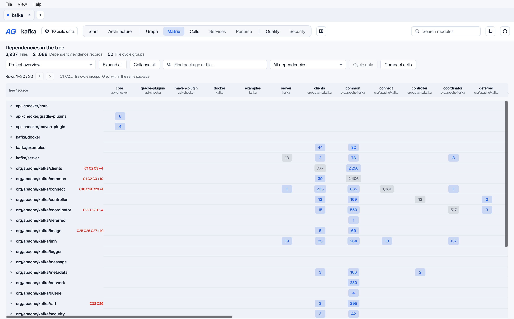
Microsoft eShop
C#-Repository-Übersicht. Pakete wurden für diese Aufnahmen nicht wiederhergestellt; Compilerbelege können unvollständig sein.
Quellstand ab10e4c68fd2 · MIT · 2026-11-20

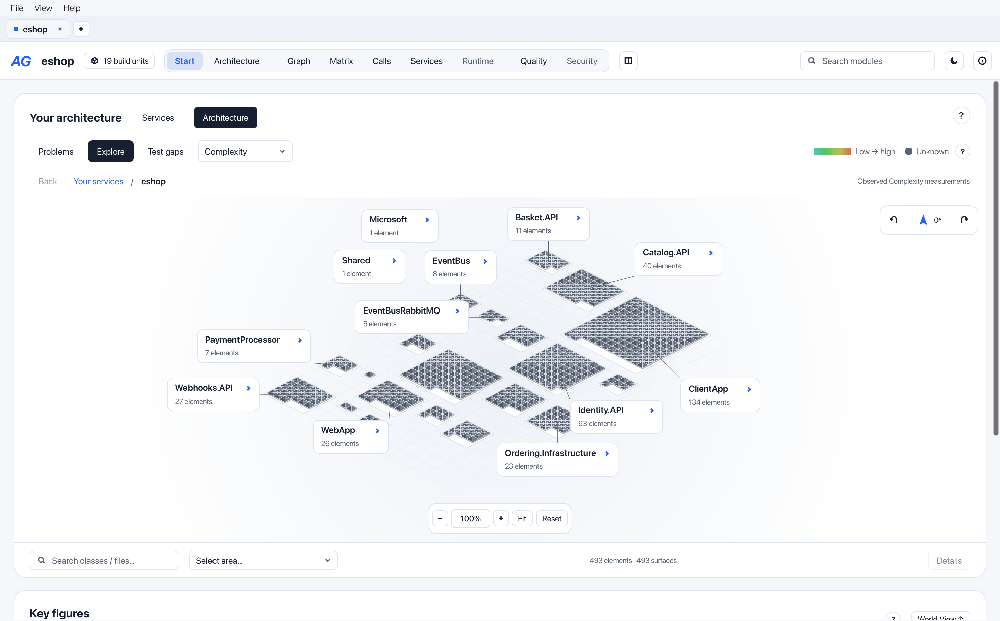

NestJS
Workspace-Übersicht einschließlich erkannter Beispielprojekte, ohne Installation des Projekt-Compilers. Graue Werte sind fehlende Messungen.
Quellstand e0600bb04c3a · MIT · 2026-11-20


Prometheus
Imports sind verfügbar. In der Aufnahmeumgebung fehlt das Go-SDK; Compiler-Metriken bleiben unbekannt.
Quellstand 06170caaea44 · Apache-2.0 · 2026-11-20


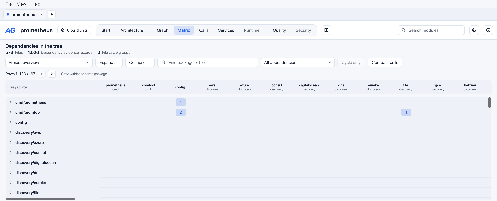
ripgrep
Workspace-Crates und Syntaxmetriken. Kein rust-analyzer und keine Freigabe des Projekt-Compilers.
Quellstand 43fc97d43a4c · MIT OR Unlicense · 2026-11-20


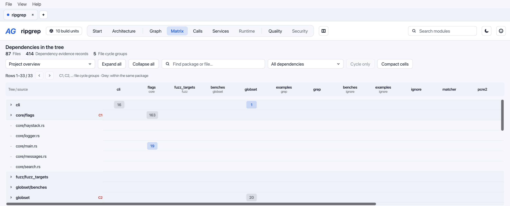
Django
Django-Paketquellen, lokal geparst, ohne das Projekt zu importieren.
Quellstand c67d872765e0 · BSD-3-Clause · 2026-11-20

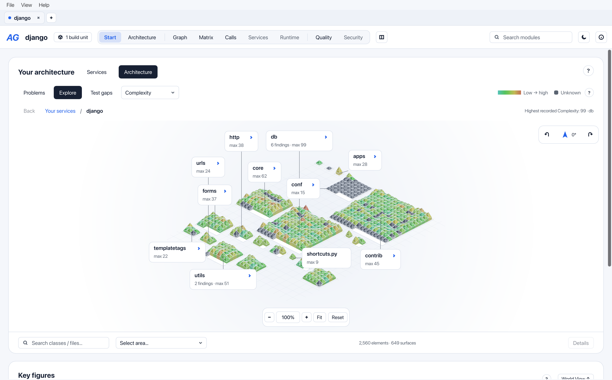

Symfony
Symfony-Repository-Übersicht. Statisch gebundene Aufrufe und Syntaxmetriken; dynamische Empfänger bleiben offen.
Quellstand 2894e4eeea9e · MIT · 2026-11-20

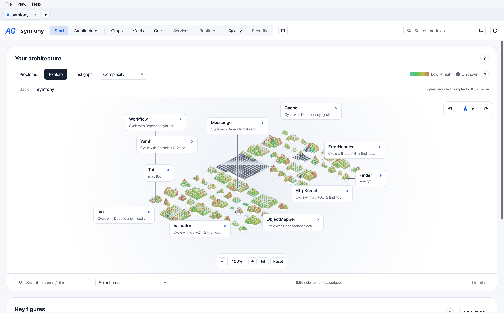

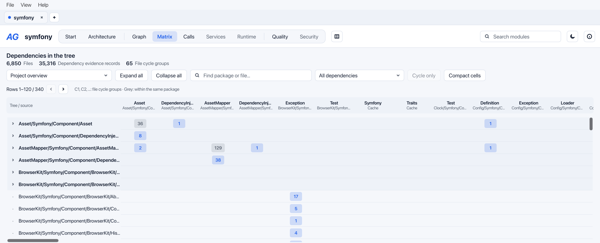
OkHttp
Kotlin-Workspace-Übersicht einschließlich erkannter Build- und Beispielmodule. Gradle wird nicht ausgeführt; dynamische Aufrufe bleiben Lücken.
Quellstand 619d9c987aa7 · Apache-2.0 · 2026-11-20


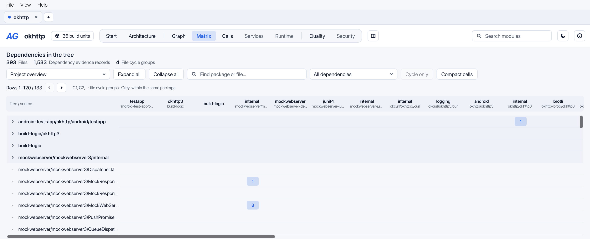
LevelDB
Quellen und Include-Beziehungen. Fehlende Include-Pfade bleiben offen; kein Präprozessor oder Compiler wird ausgeführt.
Quellstand 29465588d3df · BSD-3-Clause · 2026-11-20

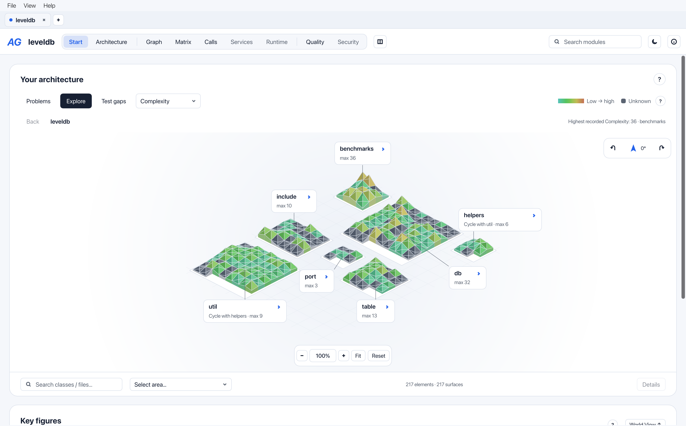

SwiftNIO
Swift-Package-Manager-Repository-Übersicht einschließlich erkannter Integrations- und Benchmark-Targets. Xcode-Projekte gehören nicht zu dieser Analyse.
Quellstand ae78c343cde1 · Apache-2.0 · 2026-11-20


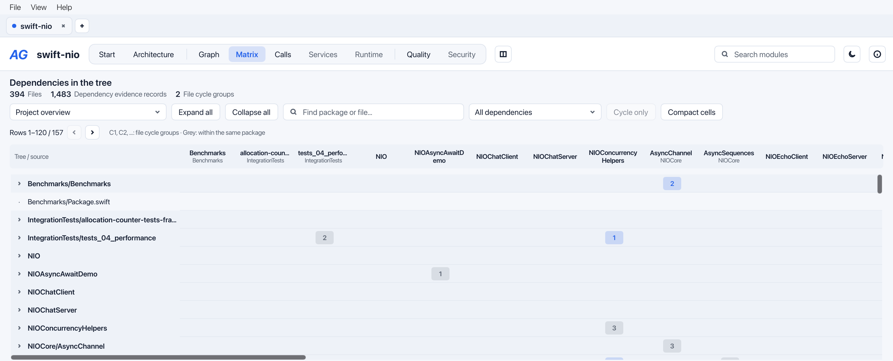
Mastodon
Mastodon-Repository-Übersicht mit Ruby-Quellen aus app und lib sowie erkannten Frontend-Bereichen. Dynamischer Ruby-Dispatch wird nicht vollständig als Laufzeitverhalten erfasst.
Quellstand 9bd703117f99 · AGPL-3.0 · 2026-11-20

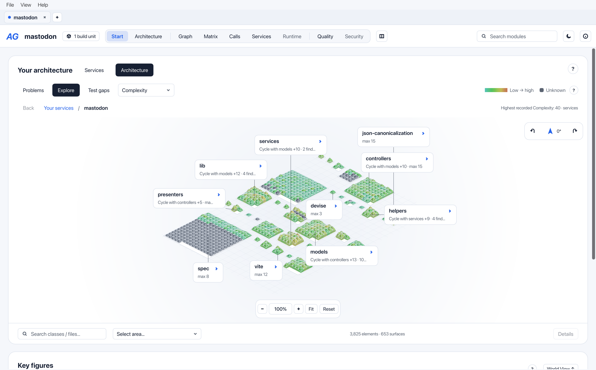

Apache Pekko
Scala-Repository-Übersicht mit einer actor-Quellkonfiguration und weiteren erkannten Bereichen; implizite und sprachübergreifende Aufrufe bleiben offen.
Quellstand 1d75feef3929 · Apache-2.0 · 2026-11-20


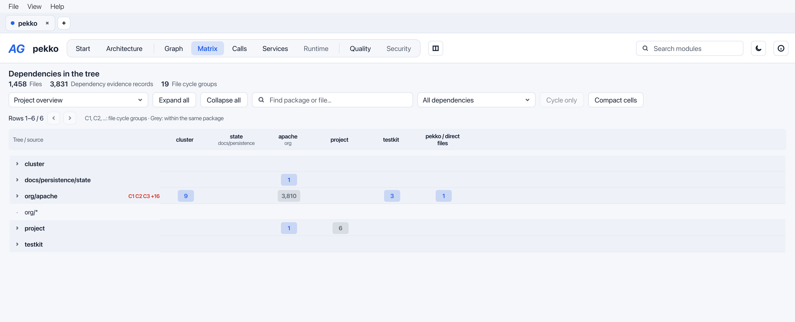
Aufnahmen nachvollziehen
Die Rohbilder sind unveränderte Offscreen-Renderings der Desktop-App. Der unten verlinkte Nachweis enthält vollständige Commit-IDs, Lizenz-Prüfsummen, Quellfilter und Aufnahmeparameter. Die Quellen wurden nicht gebaut und es wurden keine Abhängigkeiten installiert.
Provenienz und Aufnahmeparameter (JSON) · Über die Beispiele